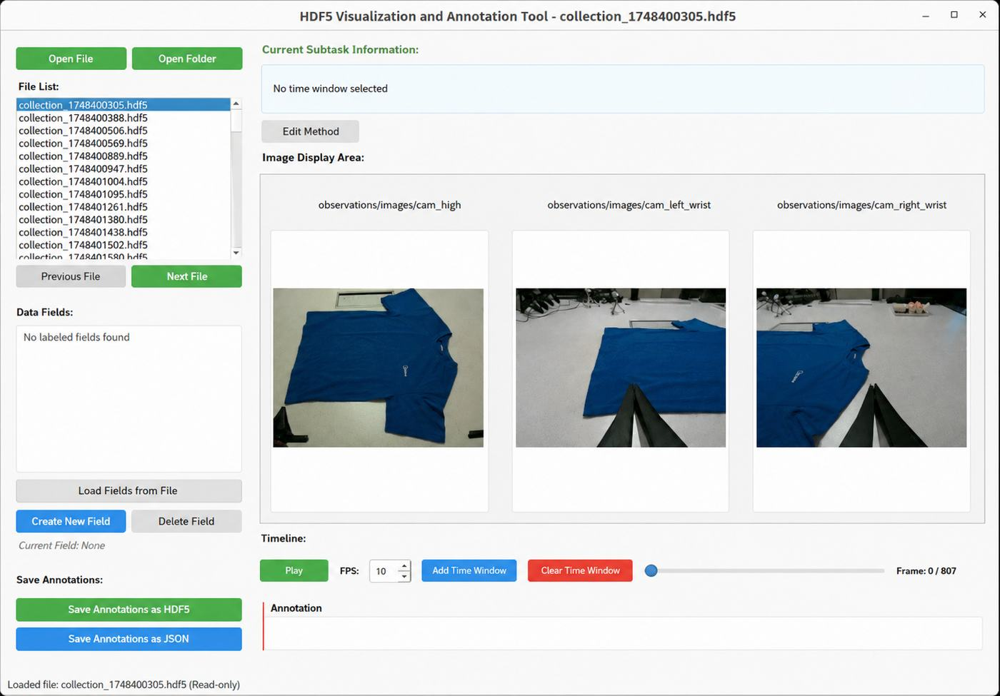
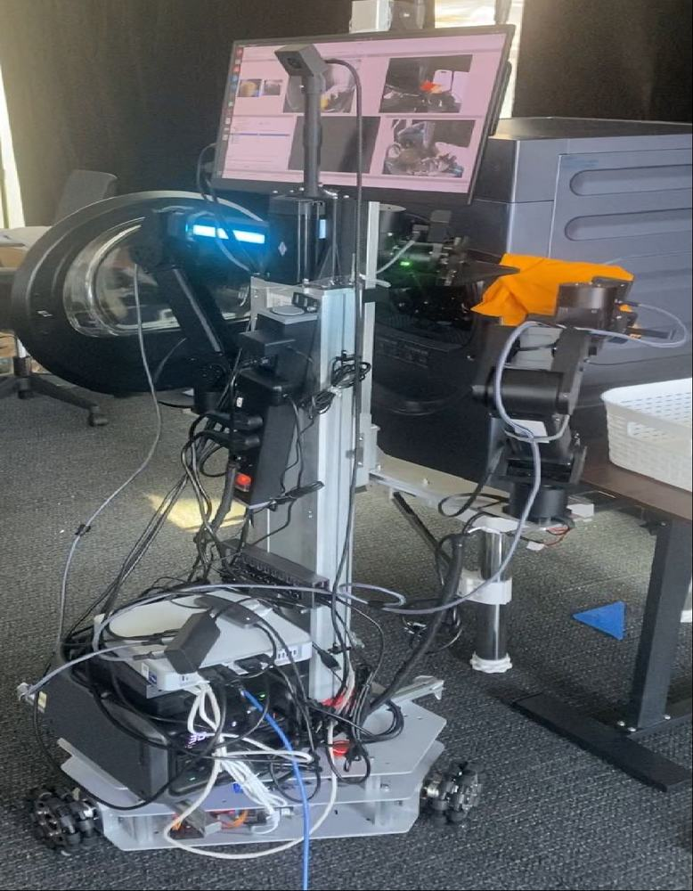

Embodied VLA framework for real-world household manipulation
Midea AI Research Institute • Embodied Intelligence Intern • Jun 2025 – Sep 2025
VLA Policies
Teleoperation
HDF5
Multi-view Vision
DAgger
- Co-developed an embodied VLA framework integrating mobile platforms, ARX robotic arms, multi-view cameras, and VR teleoperation for household manipulation.
- Built a multi-view HDF5 data pipeline aligning RGB observations, language instructions, robot states, and teleoperation trajectories.
- Fine-tuned PaliGemma-based and pi0-style VLA policies with reasoning-style supervision and stop-gradient training for long-horizon tasks.
- Implemented DAgger-style online intervention, collecting correction trajectories and improving the real-world task success rate from 65% to 73%.
Evaluation details: real-world manipulation rollout setting; no separate trial-count metadata was found in the available project files.
Research value: experience with the full robot-learning loop from data collection and policy adaptation to real-robot rollout analysis.

